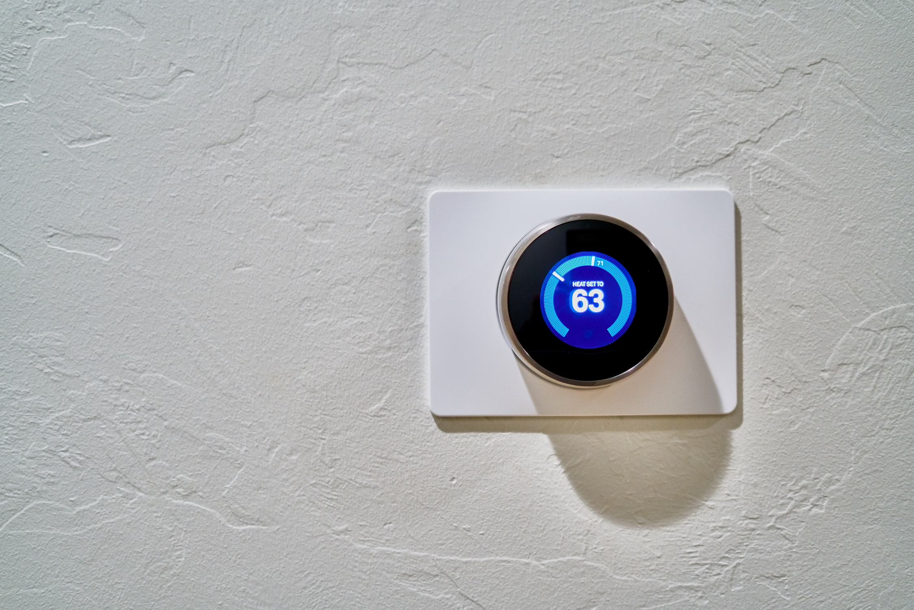
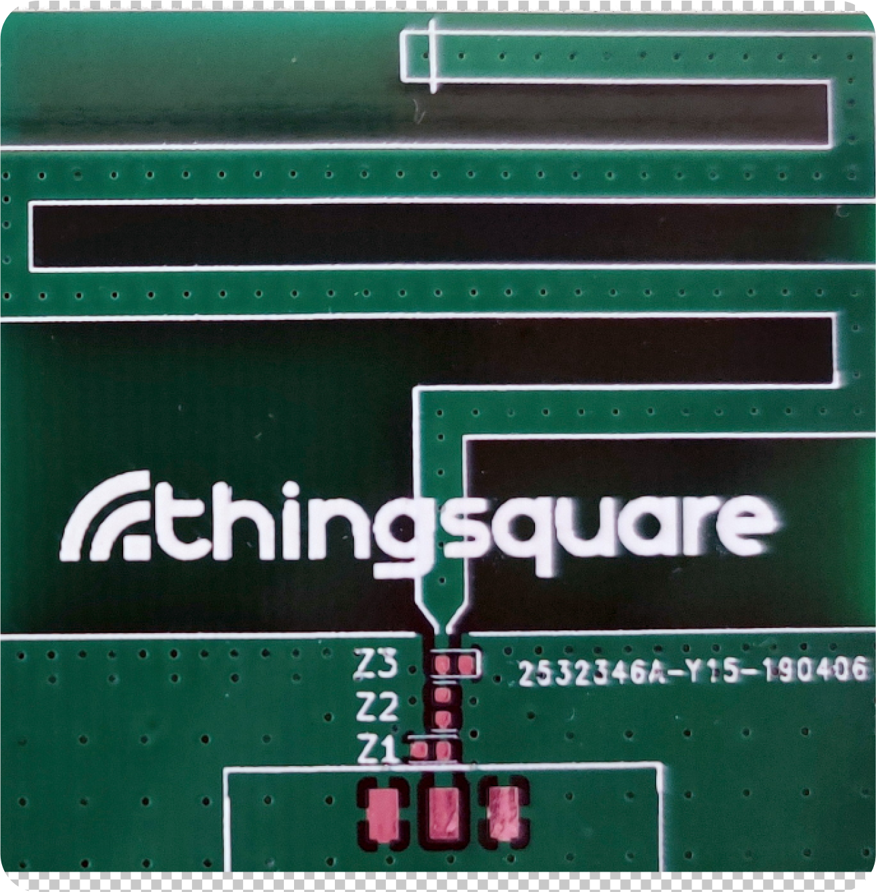
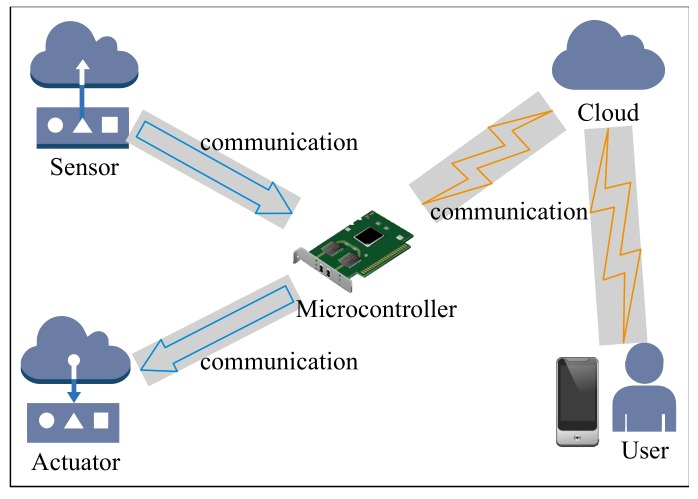

|
Collection of data |
|
SensorsFirst is the main way to collect data is using sensors. There are a lot of different types of sensors that were installed in IoT devices, for example:
These sensors are measuring different aspects in the physical world, and each sensor is connected with gateways so that they can relay the collected data of a server in the cloud. |
 |
|  |
AntennaAntenna will affect a devices’ in terms of communication range, overall power consumption, and battery life. And a suitable antenna should also have high efficiency and adequate bandwidth covering the desired frequency range. There are 3 different types of antennas:
Normally will use a PCB antenna as it can be attached to the main circuit board featuring an inverted-F, L-shaped, or meandered antenna pattern, they are reliable, easy to use, and adjustment-free. |
MicrocontrollerMicrocontrollers are tiny, self-contained computers hosted on a microchip. As mentioned above sensors will have a gateway to connect to the servers but gateways lack
It is like a microprocessor but it does not equal to a microprocessor. As a microcontroller has the CPU, RAM, ROM, and peripherals all embedded onto a single chip. So it is basically a computer. |
 |
Collate and transfer data |
|
|
There are different types of connections for collate and transfer data. Here are some examples:
|
|
Analyze data and take action |
|
|
With IoT data collection, the collected data is far more larger, so with more data the predicted accuracy can be increased. As we have a lot more information, we can leverage to make better decisions, and many more variables to consider when predicting maintenance. Data analysis is a process , which is used to examine big and small data sets with varying data properties to extract meaningful conclusions and actionable insights. And with the data collected by those devices we still need to turn that data to information in order to use that information to take action later. As figure 1 mentioned it has three types of ways that will do data analysis, user interface, analytics of business application and backend system. In analytics of business applications, businesses can use this type of data to minimize lost and maximize profit. For example, companies can use IoT to predict maintenance. It will address the potential problem to the company before a failure occurs. In the back-end system, is back-end-data-sharing, A company can use this to access information from all of the devices working inside the company building as organized together |
|